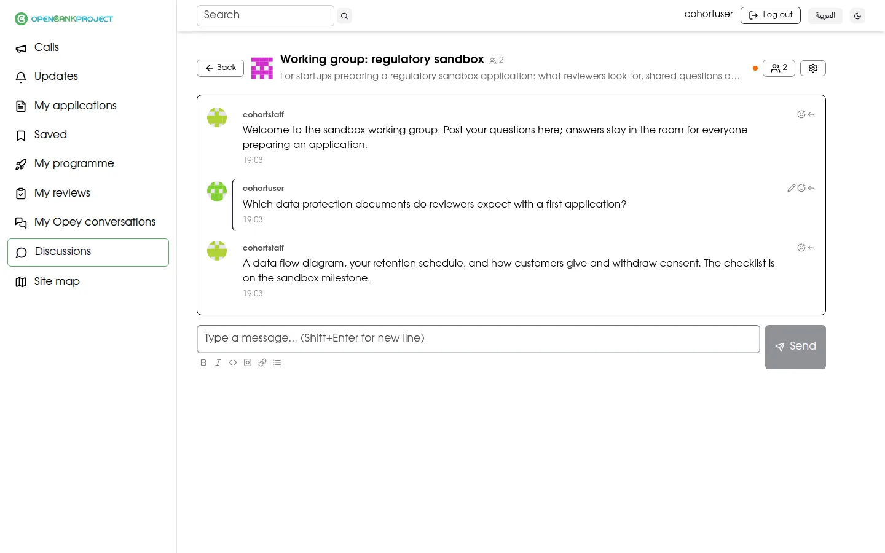
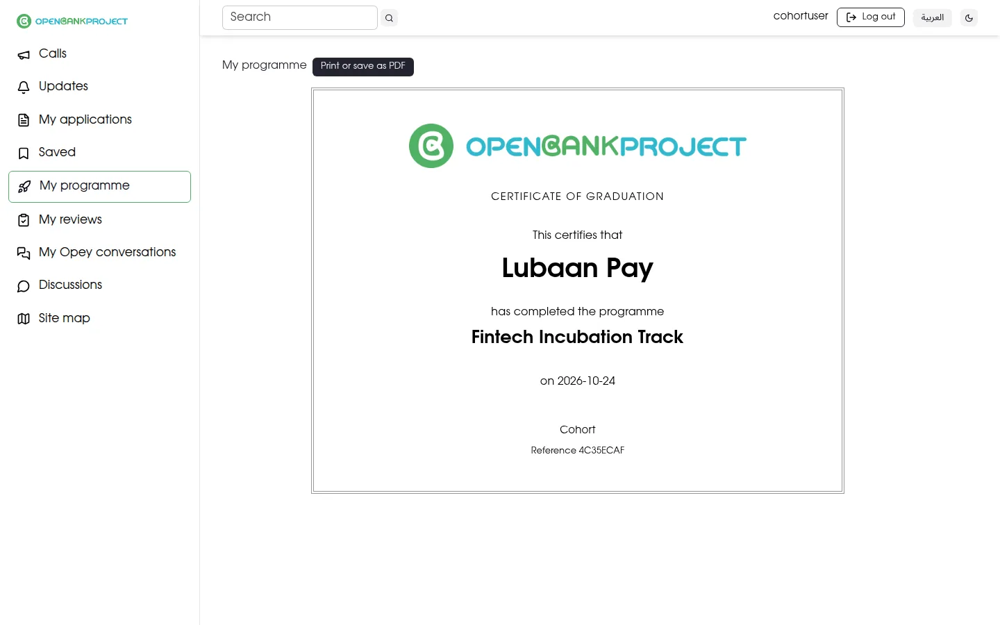

OBP Cohort · Tour
OBP Cohort · Tour
From open call to graduation.
Follow one programme through Cohort: the public call, the review, the startup's progress and its certificate. The startups and people are fictional.
 OBP Cohort · Tour
OBP Cohort · Tour
Follow one programme through Cohort: the public call, the review, the startup's progress and its certificate. The startups and people are fictional.
01 · PUBLIC
Anyone can find a call and apply, without contacting staff. Announcements sit on top, and Opey, the AI assistant, answers questions about eligibility, deadlines and how to apply, using the calls on the page.

02 · STAFF AND REVIEWERS
Staff set a weighted rubric for the call and assign accepted reviewers. A reviewer declares any conflict of interest, then scores each criterion. Applications are ranked by their average score, and staff record the decision: accepted, waitlisted or not selected.

03 · STARTUP
Once accepted, the startup registers its company and gets its own programme page: announcements, its stage, milestones to report on with evidence, and sessions to book. Reminders go out when a milestone is due or overdue.

04 · EVERYONE
Rooms for working groups and Q&A, with threads and reactions, so answers stay in one place for everyone who needs them.

05 · STAFF
Counted live from the records, never stored: each call's funnel and each programme's startups by stage, with those behind or flagged highlighted. Download either table as CSV or PDF for the board report.

06 · STARTUP
When every milestone is accepted, staff move the startup to graduated; Cohort checks the gate on the server first. The startup opens its certificate in its own language and prints it or saves it as PDF.
